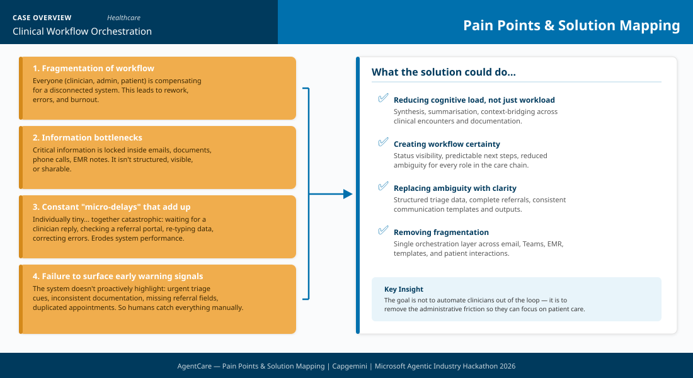

Pain Points & Solution Mapping
Click the diagram to view full size.

WHAT
Business Challenges
Fragmentation of Workflow
Everyone (clinician, admin, patient) is compensating for a disconnected system. This leads to rework, errors, and burnout.
Information Bottlenecks
Critical information locked inside emails, documents, phone calls, EMR notes. Not structured, visible, or sharable.
Constant Micro-Delays
Waiting for replies, checking portals, re-typing data, correcting errors. Individually tiny, together catastrophic.
Failure to Surface Early Warnings
No proactive highlighting of urgent triage cues, inconsistent documentation, or duplicated appointments.
Use Case Description
Three AI agents orchestrated through Microsoft Copilot Studio automate clinical administration, freeing clinicians from paperwork:
Triage Agent Agentic
Patient chatbot: emergency scan before sign-in, symptom collection, history-aware urgency classification, care advice. Escalates urgent cases to live receptionist if no slot available.
Scheduling Agent Automation
Self-service appointment booking, confirmations, cancellation waitlist management.
Documentation Agent Gen AI
Drafts SOAP notes from Teams consultation transcript, extracts clinical entities, saves to Dataverse, emails patient next steps.
WHY
KPIs Impacted
Business Impact
Clinician Capacity
~15 minutes recovered per hour — automated SOAP drafting from transcript, pre-filled triage data
Admin Relief
Self-service triage and booking via chatbot reduces phone volume by 40%
Patient Experience
24/7 triage chatbot, self-service booking, automatic appointment confirmations
Documentation Quality
Structured SOAP notes drafted from consultation transcripts; completeness validated before saving
HOW
Functional Solution
- Central orchestration via Copilot Studio
- Agents automate admin, clinicians focus on patients
- Nothing saved or sent without clinician approval
- Graceful degradation with defined fallbacks
Technical Solution
- Copilot Studio (agents + prompt actions)
- Power Automate (agent flows)
- Dataverse (data backbone)
- Teams + Outlook (clinician + patient channels)